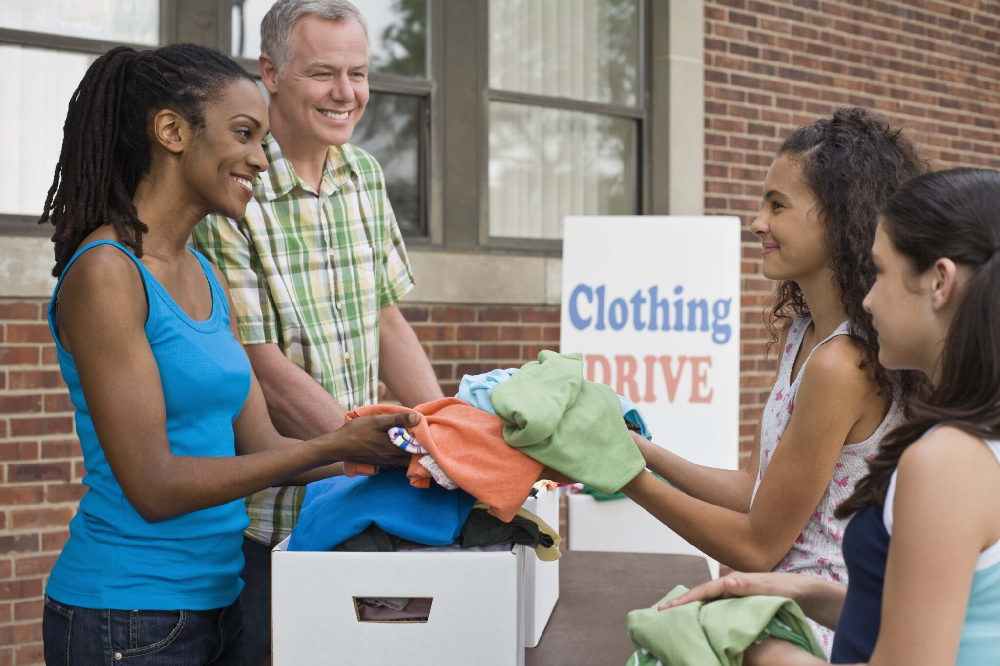
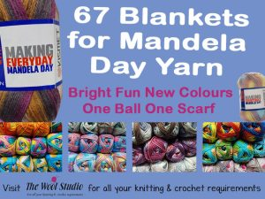
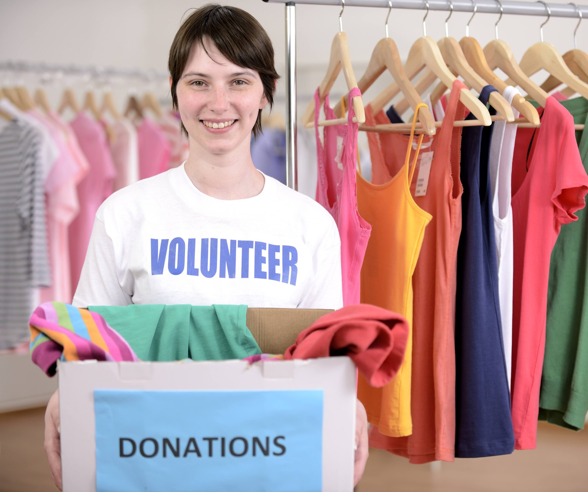
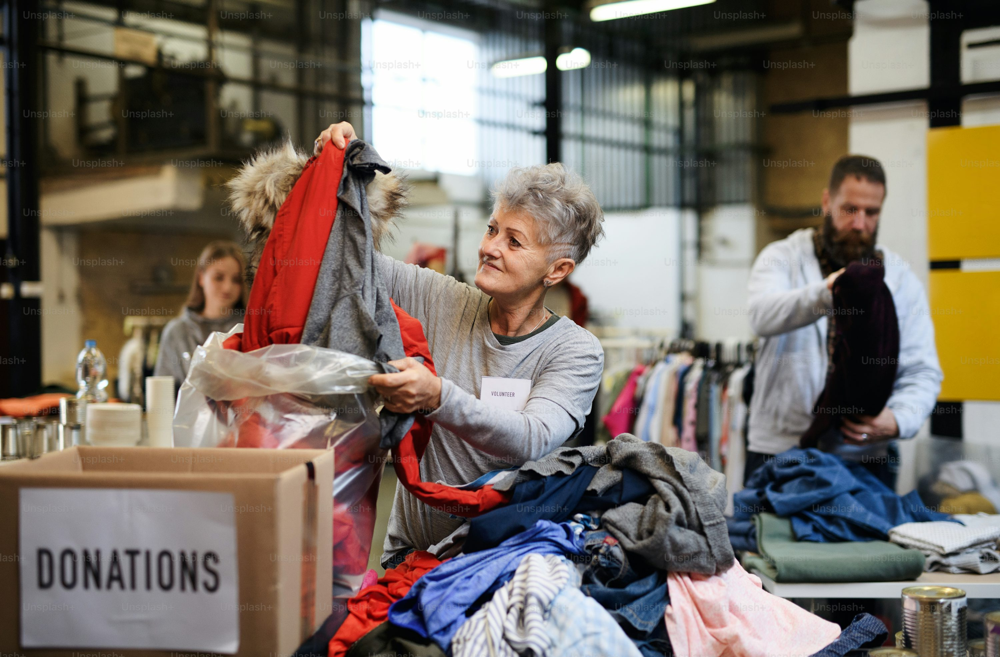

01
Donate
Donate good-quality clothing that can be repaired, reused or given to someone in need.
Repair • Restyle • Rewear
NELSON MANDELA DAY
Our annual community initiative celebrates Nelson Mandela Day by encouraging people to use 67 minutes of their time to make a positive difference.
Volunteers help repair donated clothing and prepare garments to be given back to people in need.
Get Involved
OUR INITIATIVE
Every year, Second Spin Sewing Studio holds 67 Minutes of Mend and Give Back as part of Nelson Mandela Day.
The event combines sewing, sustainability and community service. Volunteers spend 67 minutes repairing donated clothing and preparing it for distribution to people in need.
MAKE A DIFFERENCE

Donate good-quality clothing that can be repaired, reused or given to someone in need.

Give your time and sewing skills to help repair clothing during the initiative.

Help us prepare clothing that can support members of our local community.
YOUR TIME MATTERS
You do not need to be a sewing expert to participate. Volunteers can help sort clothing, prepare donations, assist with simple repairs and support the initiative.
Volunteer With Usminutes to give back
GET INVOLVED
Participating gives community members an opportunity to work together while promoting clothing reuse and helping people in need.
I Want to HelpDonate, volunteer or spend 67 minutes helping Second Spin Sewing Studio give back.
Get Involved